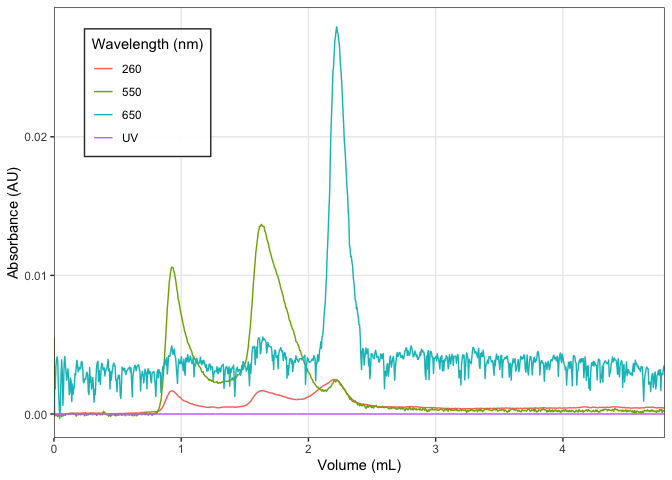
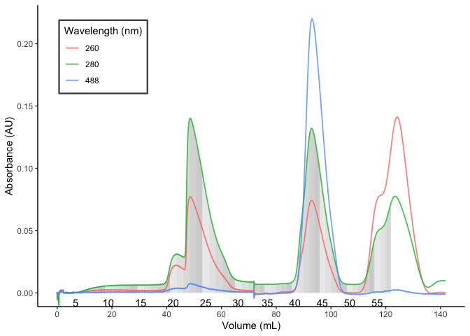
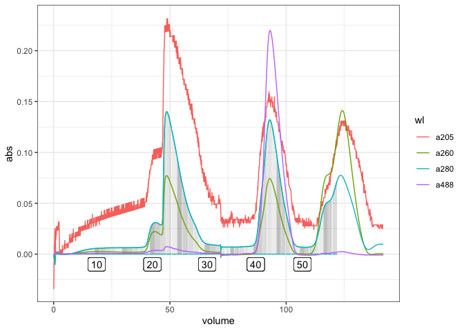

The goal of chromr is to …
Installation
You can install the development version of chromr from R-Universe with:
install.packages(
"chromr",
repos = c("https://bradyajohnston.r-universe.dev", "https://cloud.r-project.org")
)Example
Reading of chromatogram files and plotting from the BioRad QuadTech.
fl <- system.file(
"extdata",
"example_quadtec_3.txt",
package = "chromr"
)
dat <- fl |>
chrom_read_quadtech()
dat
#> # A tibble: 960 × 10
#> time percent_b au m_s_cm psi volume a280 a260 a550 a650
#> <dbl> <dbl> <dbl> <dbl> <dbl> <dbl> <dbl> <dbl> <dbl> <dbl>
#> 1 0 0 0 16.0 265 0 0 0 5.51e-3 0
#> 2 1 0 0 16.0 266 0.00501 4 e-6 1.3 e-5 -1.6 e-4 1.87e-3
#> 3 2 0 0 16.0 270 0.0100 0 -8 e-6 -6.40e-5 1.80e-3
#> 4 3 0 0 16.0 272 0.0150 -1.3e-5 -2.20e-5 -6.40e-5 3.39e-3
#> 5 4 0 0 16.0 272 0.0200 -6 e-6 -1.5 e-5 -9.5 e-5 3.91e-3
#> 6 5 0 0 16.0 276 0.0250 -6 e-6 -1.80e-5 -1.28e-4 4.13e-3
#> 7 6 0 0 16.0 275 0.0300 -6 e-6 -2.90e-5 -1.93e-4 3.76e-3
#> 8 7 0 0 16.0 273 0.0350 -2 e-6 -8 e-6 -1.28e-4 1.92e-3
#> 9 8 0 0 16.0 273 0.0400 3 e-6 -1.10e-5 -6.40e-5 8.83e-4
#> 10 9 0 0 16.0 275 0.0450 -8 e-6 -9 e-6 -9.60e-5 -3.2 e-4
#> # ℹ 950 more rows
dat |>
dplyr::select(-a280) |>
chrom_plot(ylim = c())
fl <- system.file(
"extdata",
"example_quadtec_4.txt",
package = "chromr"
)
fl |>
chrom_read_quadtech() |>
chrom_add_volume(0.3) |>
chrom_plot(xlim = c(0, 3), ylim = c(NA, 0.01))
Fractions2
fl1 <- system.file("extdata", "example_quadtec_1.TXT", package = "chromr")
fl2 <- system.file("extdata", "example_quadtec_2.TXT", package = "chromr")
df1 <- chrom_read_quadtech(fl1)
df2 <- chrom_read_quadtech(fl2)
dat <- chrom_append_run(df1, df2)
dat |>
dplyr::slice_sample(prop = 0.1) |>
pivot_wl_longer() |>
ggplot(aes(volume, abs, fraction = fraction, group = wl)) +
geom_fraction_bars(aes(color = wl), lines = "a280") +
geom_line(aes(color = wl)) +
geom_fraction_label(colour = "black", ypos = -0.01, period = 10) +
scale_fill_grey() +
theme_bw()